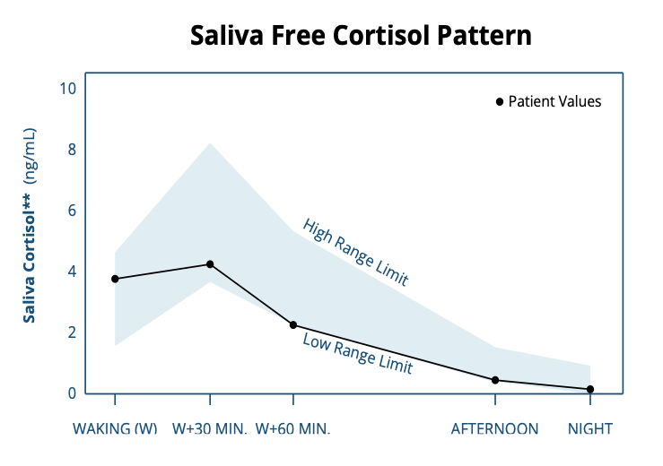

Moe wakker worden
Wat cortisol doet, waar brainfog vandaan komt, welke stress je niet voelt, en wat je kunt meten.
Ik kwam elke ochtend moeilijk op gang, voelde me slap, werd duizelig als ik opstond en had last van brainfog. Ik at en dronk te weinig - stress die ik zelf niet voelde, maar mijn lichaam wel. Op deze pagina zie je hoe cortisol over de dag hoort te lopen, welke soorten stress je niet voelt, en wat je kunt meten.
Deel 1
Cortisol over de dag
Hoe het hoort te lopen, en wat er verandert na lange tijd stress.
Zo hoort cortisol te lopen
Cortisol helpt je wakker worden, houdt je bloedsuiker op peil en remt ontsteking. Het hoort 's ochtends hoog te zijn en 's avonds laag. Tik op een moment van de dag.
Tik op een moment van de dag, of schuif over de grafiek.
Mediaan speekselcortisol bij vrouwen van 21 tot 30, uit 15 studies met 18.698 mensen. Het punt bij het wakker worden en de piek zijn afgeleid met de gemiddelde stijging uit een tweede studie. Tussen mensen verschilt het veel.
Bron voor de nacht gefinancierd door een maker van cortisolmedicijnen
The CIRCORT database: Reference ranges and seasonal changes in diurnal salivary cortisol derived from a meta-dataset comprised of 15 field studies.
Miller R, Stalder T, Jarczok M, Almeida DM, Badrick E et al.
Psychoneuroendocrinology 2016 · PMID 27448524 · PMCID PMC5108362
The cortisol awakening response - normal values and confounds.
Wüst S, Wolf J, Hellhammer DH, Federenko I, Schommer N et al.
Noise Health 2000 · PMID 12689474
Assessment of the cortisol awakening response: Expert consensus guidelines.
Stalder T, Kirschbaum C, Kudielka BM, Adam EK, Pruessner JC et al.
Psychoneuroendocrinology 2016 · PMID 26563991
Cortisol awakening response and psychosocial factors: a systematic review and meta-analysis.
Chida Y, Steptoe A
Biol Psychol 2009 · PMID 19022335
Sleep loss results in an elevation of cortisol levels the next evening.
Leproult R, Copinschi G, Buxton O, Van Cauter E
Sleep 1997 · PMID 9415946
Modified-release hydrocortisone to provide circadian cortisol profiles.
Debono M, Ghobadi C, Rostami-Hodjegan A, Huatan H, Campbell MJ et al.
J Clin Endocrinol Metab 2009 · PMID 19223520 · PMCID PMC2684472
The hypothalamic-pituitary-adrenal axis and immune-mediated inflammation.
Chrousos GP
N Engl J Med 1995 · PMID 7715646
Eerst hoog, dan juist laag
Bij stress die aanhoudt, stijgt cortisol eerst. Hoe langer de stress duurt, hoe lager je ochtendwaarde en hoe vlakker je dagcurve. Dat vond een overzicht van 107 studies, al waren de verschillen klein en liepen de studies sterk uiteen. Een vlakkere curve hing in 80 studies samen met meer moeheid; of dat oorzaak of gevolg is, weten we nog niet. In een grote Engelse studie, vooral bij oudere mannen, kregen mensen met de laagste ochtendcortisol later anderhalf keer zo vaak last van moeheid.
If it goes up, must it come down? Chronic stress and the hypothalamic-pituitary-adrenocortical axis in humans.
Miller GE, Chen E, Zhou ES
Psychol Bull 2007 · PMID 17201569
Diurnal cortisol slopes and mental and physical health outcomes: A systematic review and meta-analysis.
Adam EK, Quinn ME, Tavernier R, McQuillan MT, Dahlke KA et al.
Psychoneuroendocrinology 2017 · PMID 28578301 · PMCID PMC5568897
Cortisol secretion and fatigue: associations in a community based cohort.
Kumari M, Badrick E, Chandola T, Adam EK, Stafford M et al.
Psychoneuroendocrinology 2009 · PMID 19497676
Je bijnieren raken niet op
Online heet dit vaak bijnieruitputting. Volgens de Endocrine Society bestaat die aandoening niet, en een systematische review van 58 studies vond er geen bewijs voor. Je bijnieren raken niet op door stress. Wat verandert, is hoe sterk je hersenen ze aansturen en hoe ze reageren op terugkoppeling.
Adrenal fatigue does not exist: a systematic review.
Cadegiani FA, Kater CE
BMC Endocr Disord 2016 · PMID 27557747 · PMCID PMC4997656
Endocrine Society: adrenal fatigue
Geen bewijs dat bijnieruitputting bestaat
Pseudo-endocrine Disorders: Recognition, Management, and Action.
McDermott MT
J Endocr Soc 2024 · PMID 39749108 · PMCID PMC11694709
Deel 2
Stress die je niet voelt
Je stresssysteem reageert ook op tekorten, niet alleen op drukte.
Meer dan druk in je hoofd
Je kunt je goed voelen terwijl je lichaam stress ervaart. Deze tekorten verhogen cortisol, ook als je je niet gestrest voelt:
Te weinig eten
Bij 121 vrouwen op 1.200 kcal per dag steeg de totale cortisol in 3 weken, vooral 's avonds. Ze voelden zich niet meer gestrest.
Te weinig energie bij veel sporten
Sportende vrouwen zonder menstruatie hadden overdag hogere cortisol. Het hoort bij RED-S, waarbij ook je cyclus en herstel van slag raken.
Te weinig slaap
Na één korte nacht lag cortisol 's avonds 37 tot 45% hoger. Na zes nachten van 4 uur daalde het 's avonds zes keer zo langzaam.
Zwaar trainen
30 minuten op 80% van je maximum gaf 83% meer cortisol. Op 40% was er geen duidelijk effect.
Ziek zijn of ontsteking
Je stresssysteem reageert ook op ontsteking in je lichaam.
Low calorie dieting increases cortisol.
Tomiyama AJ, Mann T, Vinas D, Hunger JM, Dejager J et al.
Psychosom Med 2010 · PMID 20368473 · PMCID PMC2895000
Nutritional and endocrine-metabolic aberrations in amenorrheic athletes.
Laughlin GA, Yen SS
J Clin Endocrinol Metab 1996 · PMID 8954031
2023 International Olympic Committee's (IOC) consensus statement on Relative Energy Deficiency in Sport (REDs).
Mountjoy M, Ackerman KE, Bailey DM, Burke LM, Constantini N et al.
Br J Sports Med 2023 · PMID 37752011
Sleep loss results in an elevation of cortisol levels the next evening.
Leproult R, Copinschi G, Buxton O, Van Cauter E
Sleep 1997 · PMID 9415946
Impact of sleep debt on metabolic and endocrine function.
Spiegel K, Leproult R, Van Cauter E
Lancet 1999 · PMID 10543671
Exercise and circulating cortisol levels: the intensity threshold effect.
Hill EE, Zack E, Battaglini C, Viru M, Viru A et al.
J Endocrinol Invest 2008 · PMID 18787373
The hypothalamic-pituitary-adrenal axis and immune-mediated inflammation.
Chrousos GP
N Engl J Med 1995 · PMID 7715646
En brainfog?
Brainfog is geen medische term, maar een verzamelnaam: vergeetachtig, een wazig hoofd en moeite met focussen. Het komt vaak samen met moe wakker worden, en hangt aan dezelfde tekorten. In een overzicht van 70 studies gingen na korte tijd zonder slaap vooral aandacht en reactiesnelheid duidelijk achteruit. Een klein vochttekort maakte jonge vrouwen minder geconcentreerd. En bij vrouwen van 18 tot 35 ging een stijgende ferritine samen met duidelijk betere scores op denktaken. Jonge mensen met brainfog noemden zelf vooral moeheid, te weinig slaap, lang staan en uitdroging als trigger.
Vochtstudie deels gedaan door een waterproducent
What is brain fog? An evaluation of the symptom in postural tachycardia syndrome.
Ross AJ, Medow MS, Rowe PC, Stewart JM
Clin Auton Res 2013 · PMID 23999934 · PMCID PMC3896080
A meta-analysis of the impact of short-term sleep deprivation on cognitive variables.
Lim J, Dinges DF
Psychol Bull 2010 · PMID 20438143 · PMCID PMC3290659
Mild dehydration affects mood in healthy young women.
Armstrong LE, Ganio MS, Casa DJ, Lee EC, McDermott BP et al.
J Nutr 2012 · PMID 22190027
Iron treatment normalizes cognitive functioning in young women.
Murray-Kolb LE, Beard JL
Am J Clin Nutr 2007 · PMID 17344500
Zo ging het bij mij
Ik voelde me slap en werd duizelig als ik opstond, terwijl ik dacht dat ik genoeg dronk. Ik kwam moeilijk uit bed, viel makkelijk in slaap en had last van brainfog. Eén keer werd het zwart voor mijn ogen en moest ik twee uur slapen. Mijn DUTCH-test liet zien dat mijn ochtendpiek bijna uitbleef: 13%, waar 50 tot 160% normaal is. Twee klinieken zochten het in mijn lever, maar mijn bloedwaarden lieten zien dat die het gewoon goed deed. Toen ik mijn data naast elkaar legde, bleek het simpeler: ik at te weinig en ik dronk te weinig. Meer eten, krachttraining en meer drinken, met wat zout, maakten het verschil. Sinds ik meer drink, heb ik een stuk meer energie. Ik ben er nog niet, het gaat op en af. Maar ik weet nu waar ik naar kijk.

Mijn eigen DUTCH-test van 11 mei 2025 (Nordic Laboratories). De stippen zijn mijn waarden, het blauwe vlak het bereik van het lab. Na het wakker worden steeg mijn cortisol maar 13%, waar 50 tot 160% normaal is, en na een uur zat ik onder het bereik. Het is één dag.
Mijn verhaal, geen advies. Extra zout is niet voor iedereen goed. Bij een gewone lage bloeddruk raadt de huisarts geen extra zout aan, en bij een hoge bloeddruk zeker niet. Laat eerst meten en overleg met een arts.
Mijn eigen meting, één dag
Thuisarts: lage bloeddruk
Geen extra zout bij een gewone lage bloeddruk
Wat je ritme helpt
Je cortisolritme volgt je dag. Toen mensen 12 uur verschoven sliepen en aten, draaide hun ritme om. Fel licht in de vroege ochtend gaf een grotere ochtendpiek. Buiten zijn helpt ook: bij 400.000 mensen ging elk extra uur buiten samen met makkelijker opstaan en minder vaak moe zijn. En regelmatig bewegen, ook licht, gaf meer energie. Zelf ga ik 's ochtends direct naar buiten en beweeg ik. Er is geen studie die laat zien dat een vlakke curve hiermee 'herstelt'.
Adverse metabolic and cardiovascular consequences of circadian misalignment.
Scheer FA, Hilton MF, Mantzoros CS, Shea SA
Proc Natl Acad Sci U S A 2009 · PMID 19255424 · PMCID PMC2657421
Transition from dim to bright light in the morning induces an immediate elevation of cortisol levels.
Leproult R, Colecchia EF, L'Hermite-Balériaux M, Van Cauter E
J Clin Endocrinol Metab 2001 · PMID 11231993
Time spent in outdoor light is associated with mood, sleep, and circadian rhythm-related outcomes: A cross-sectional and longitudinal study in over 400,000 UK Biobank participants.
Burns AC, Saxena R, Vetter C, Phillips AJK, Lane JM et al.
J Affect Disord 2021 · PMID 34488088 · PMCID PMC8892387
Effects of chronic exercise on feelings of energy and fatigue: a quantitative synthesis.
Puetz TW, O'Connor PJ, Dishman RK
Psychol Bull 2006 · PMID 17073524
A randomized controlled trial of the effect of aerobic exercise training on feelings of energy and fatigue in sedentary young adults with persistent fatigue.
Puetz TW, Flowers SS, O'Connor PJ
Psychother Psychosom 2008 · PMID 18277063
Deel 3
Meten
Wat een cortisoltest wel en niet zegt, en wat je nog meer kunt meten.
Wat een cortisoltest wel en niet zegt
Eén bloedprik in de ochtend zegt weinig over je dagcurve. Hij helpt vooral om een echte bijnieraandoening uit te sluiten, en ook dan is een extra test nodig. Speeksel over de dag laat de curve zien, maar alleen als je precies op tijd afneemt: 26% deed dat niet goed, en dan verdween de ochtendpiek uit de meting. Eén dag zegt weinig; voor een betrouwbaar beeld zijn 2 tot 6 dagen nodig. De DUTCH-urinetest is alleen onderzocht door de maker zelf. Gebruik je de pil, dan ligt je cortisol in bloed hoger door een eiwit dat cortisol bindt.
DUTCH-studie gedaan door de maker van de test
Diagnosis and Treatment of Primary Adrenal Insufficiency: An Endocrine Society Clinical Practice Guideline.
Bornstein SR, Allolio B, Arlt W, Barthel A, Don-Wauchope A et al.
J Clin Endocrinol Metab 2016 · PMID 26760044 · PMCID PMC4880116
Compliance with saliva sampling protocols: electronic monitoring reveals invalid cortisol daytime profiles in noncompliant subjects.
Kudielka BM, Broderick JE, Kirschbaum C
Psychosom Med 2003 · PMID 12652000
Several daily measurements are necessary to reliably assess the cortisol rise after awakening: state- and trait components.
Hellhammer J, Fries E, Schweisthal OW, Schlotz W, Stone AA et al.
Psychoneuroendocrinology 2007 · PMID 17127010
Dried urine and salivary profiling for complete assessment of cortisol and cortisol metabolites.
Newman M, Curran DA, Mayfield BP
J Clin Transl Endocrinol 2020 · PMID 33354516 · PMCID PMC7744704
The diagnosis of Cushing's syndrome: an Endocrine Society Clinical Practice Guideline.
Nieman LK, Biller BM, Findling JW, Newell-Price J, Savage MO et al.
J Clin Endocrinol Metab 2008 · PMID 18334580 · PMCID PMC2386281
Wat je wearable laat zien
Een wearable meet geen cortisol. Hij meet wel goed hoe lang je slaapt, al ziet hij wakker liggen vaak voor slaap aan, en slaapfasen zijn onbetrouwbaar. Je rusthartslag in de nacht is nauwkeurig. Je HRV wisselt per apparaat, dus vergelijk alleen met jezelf, op hetzelfde apparaat.
Slaapduur en tijdstip
Krijg je echt 7 uur of meer, op vaste tijden?
Rusthartslag in de nacht
Een stijgende lijn over meerdere dagen valt op.
HRV in de nacht
Kijk naar je eigen trend, niet naar een getal van een ander.
Recommended Amount of Sleep for a Healthy Adult: A Joint Consensus Statement of the American Academy of Sleep Medicine and Sleep Research Society.
Watson NF, Badr MS, Belenky G, Bliwise DL, Buxton OM et al.
Sleep 2015 · PMID 26039963 · PMCID PMC4434546
Performance of seven consumer sleep-tracking devices compared with polysomnography.
Chinoy ED, Cuellar JA, Huwa KE, Jameson JT, Watson CH et al.
Sleep 2021 · PMID 33378539 · PMCID PMC8120339
Validation of nocturnal resting heart rate and heart rate variability in consumer wearables.
Dial MB, Hollander ME, Vatne EA, Emerson AM, Edwards NA et al.
Physiol Rep 2025 · PMID 40834291 · PMCID PMC12367097
Accuracy Assessment of Oura Ring Nocturnal Heart Rate and Heart Rate Variability in Comparison With Electrocardiography in Time and Frequency Domains: Comprehensive Analysis.
Cao R, Azimi I, Sarhaddi F, Niela-Vilen H, Axelin A et al.
J Med Internet Res 2022 · PMID 35040799 · PMCID PMC8808342
Kijk breder dan cortisol
Moe wakker worden heeft vaak een andere oorzaak. Bij de huisarts kreeg maar ongeveer 8% een duidelijke lichamelijke verklaring, en een sombere stemming werd het vaakst gevonden. Met deze bloedwaarden kijk je breder:
Hemoglobine en bloedbeeld
Bloedarmoede.
Ferritine
Je ijzervoorraad. Bij vrouwen met een ferritine onder de 50 hielp ijzer tegen moeheid.
TSH, en vrij T4 als TSH afwijkt
Je schildklier.
Glucose of HbA1c
Je bloedsuiker.
CRP of BSE
Ontsteking in je lichaam.
IgA anti-tTG met totaal IgA
Coeliakie, een reactie op gluten.
Vitamine B12
Alleen bij tintelingen, evenwichtsklachten of als je vegan eet.
IJzerstudie gefinancierd door een ijzerfabrikant
Diagnoses during follow-up of patients presenting with fatigue in primary care.
Nijrolder I, van der Windt D, de Vries H, van der Horst H
CMAJ 2009 · PMID 19858240 · PMCID PMC2774363
The differential diagnosis of tiredness: a systematic review.
Stadje R, Dornieden K, Baum E, Becker A, Biroga T et al.
BMC Fam Pract 2016 · PMID 27765009 · PMCID PMC5072300
Effect of iron supplementation on fatigue in nonanemic menstruating women with low ferritin: a randomized controlled trial.
Vaucher P, Druais PL, Waldvogel S, Favrat B
CMAJ 2012 · PMID 22777991 · PMCID PMC3414597
Coeliac disease in primary care: case finding study.
Hin H, Bird G, Fisher P, Mahy N, Jewell D
BMJ 1999 · PMID 9888912 · PMCID PMC27697
NHG: laboratoriumonderzoek (LESA)
Welke bloedwaarden de huisarts bij moeheid aanvraagt
NHG-Standpunt vitamine B12
Wanneer B12 testen zinvol is
Thuisarts: ik ben moe
Wat je zelf kunt doen, en wanneer naar de huisarts
Deel 4
Wanneer naar de huisarts
Een echte bijnieraandoening is zeldzaam, maar bestaat wel.
Bijnierinsufficiëntie
Bij bijnierinsufficiëntie maakt je lichaam echt te weinig cortisol aan. Het is zeldzaam, zo'n 100 tot 140 op de miljoen mensen, en wordt vaak laat herkend. Klachten zijn moeheid, afvallen, duizeligheid bij opstaan, een lage bloeddruk, weinig eetlust en buikpijn. Heb je die klachten samen, ga dan naar je huisarts. Een gewone bloedprik is niet genoeg: er is een speciale test voor nodig.
Diagnosis and Treatment of Primary Adrenal Insufficiency: An Endocrine Society Clinical Practice Guideline.
Bornstein SR, Allolio B, Arlt W, Barthel A, Don-Wauchope A et al.
J Clin Endocrinol Metab 2016 · PMID 26760044 · PMCID PMC4880116
European Society of Endocrinology and Endocrine Society Joint Clinical Guideline: Diagnosis and Therapy of Glucocorticoid-induced Adrenal Insufficiency.
Beuschlein F, Else T, Bancos I, Hahner S, Hamidi O et al.
J Clin Endocrinol Metab 2024 · PMID 38724043 · PMCID PMC11180513
Deel 5
Eerst de bouwstenen
Vul eerst aan wat je tekortkomt. Pas daarna kijk je naar supplementen.
De bouwstenen
Je lichaam reageert op tekorten met stress. Daarom vul je eerst de bouwstenen aan, en meet je wat je mist:
Genoeg eten
Streng diëten verhoogde cortisol: bij 121 vrouwen op 1.200 kcal per dag al binnen 3 weken.
Genoeg koolhydraten
Op een zeer koolhydraatarm dieet lag cortisol in urine hoger, 71 tegen 50 µg per dag, in een kleine studie.
Genoeg drinken
Een klein vochttekort maakte jonge vrouwen moeër en gaf vaker hoofdpijn.
IJzer
Alleen bij een ferritine van 50 of lager hielp ijzer tegen moeheid. Te veel ijzer is schadelijk.
Vitamine D
Alleen bij een tekort gaf aanvullen minder moeheid. Moeheid alleen is geen reden om te testen.
Vitamine B12
Alleen zinvol bij een tekort.
IJzerstudies gefinancierd door een ijzerfabrikant · Vochtstudie deels gedaan door een waterproducent
Low calorie dieting increases cortisol.
Tomiyama AJ, Mann T, Vinas D, Hunger JM, Dejager J et al.
Psychosom Med 2010 · PMID 20368473 · PMCID PMC2895000
Effects of dietary composition on energy expenditure during weight-loss maintenance.
Ebbeling CB, Swain JF, Feldman HA, Wong WW, Hachey DL et al.
JAMA 2012 · PMID 22735432 · PMCID PMC3564212
Mild dehydration affects mood in healthy young women.
Armstrong LE, Ganio MS, Casa DJ, Lee EC, McDermott BP et al.
J Nutr 2012 · PMID 22190027
Effect of iron supplementation on fatigue in nonanemic menstruating women with low ferritin: a randomized controlled trial.
Vaucher P, Druais PL, Waldvogel S, Favrat B
CMAJ 2012 · PMID 22777991 · PMCID PMC3414597
Iron supplementation for unexplained fatigue in non-anaemic women: double blind randomised placebo controlled trial.
Verdon F, Burnand B, Stubi CL, Bonard C, Graff M et al.
BMJ 2003 · PMID 12763985 · PMCID PMC156009
Effect of vitamin D3 on self-perceived fatigue: A double-blind randomized placebo-controlled trial.
Nowak A, Boesch L, Andres E, Battegay E, Hornemann T et al.
Medicine (Baltimore) 2016 · PMID 28033244 · PMCID PMC5207540
H&W: vitamine D bij moeheid
Onvoldoende bewijs dat vitamine D helpt
NHG-Standpunt vitamine B12
Wanneer B12 testen zinvol is
Pas daarna: supplementen
Weet je wat je mist, dan kun je verder kijken. Zo staan een paar bekende supplementen ervoor:
Magnesium
Je magnesiumwaarde in bloed zegt weinig. Het onderzoek naar magnesium en stress is van lage kwaliteit.
Vitamine B6
Te veel geeft zenuwschade. In Nederland mag een supplement maximaal 21 mg per dag bevatten.
Zoethoutwortel
Verlengt de werking van cortisol in je lichaam, en wordt daarom online aangeraden 'voor je bijnieren'. Gecontroleerd onderzoek naar moeheid of een lage bloeddruk is er niet. Het verhoogt wel je bloeddruk en verlaagt je kalium, al bij 100 mg glycyrrhizine per dag. Niet met plaspillen, bloeddrukmedicijnen, prednison of laxeermiddelen, niet bij zwangerschap, en niet zonder arts. In DGL is het werkzame stofje eruit gehaald.
Start nooit zonder data. Een supplement voor de verkeerde oorzaak helpt niet, en kan je klachten of je testuitslagen vertroebelen. Laat eerst je waarden meten en overleg met een arts, zeker als je medicijnen of de pil gebruikt of zwanger wilt worden.
EFSA: magnesium
Magnesium in bloed is een twijfelachtige maat
The Effects of Magnesium Supplementation on Subjective Anxiety and Stress-A Systematic Review.
Boyle NB, Lawton C, Dye L
Nutrients 2017 · PMID 28445426 · PMCID PMC5452159
Scientific opinion on the tolerable upper intake level for vitamin B6.
EFSA Panel on Nutrition, Novel Foods and Food Allergens (NDA), Turck D, Bohn T, Castenmiller J, de Henauw S et al.
EFSA J 2023 · PMID 37207271 · PMCID PMC10189633
Impact of Regulatory Action on Dose Maximalization for Vitamin B6 Dietary Supplements on the Reporting Pattern for Neuropathy.
van Hunsel F, Scholl J, Vrolijk M, Ekhart C
Pharmacoepidemiol Drug Saf 2025 · PMID 39888171 · PMCID PMC11779544
Mineralocorticoid activity of liquorice: 11-beta-hydroxysteroid dehydrogenase deficiency comes of age.
Stewart PM, Wallace AM, Valentino R, Burt D, Shackleton CH et al.
Lancet 1987 · PMID 2889032
The association between consistent licorice ingestion, hypertension and hypokalaemia: a systematic review and meta-analysis.
Penninkilampi R, Eslick EM, Eslick GD
J Hum Hypertens 2017 · PMID 28660884
A low dose of daily licorice intake affects renin, aldosterone, and home blood pressure in a randomized crossover trial.
Af Geijerstam P, Joelsson A, Rådholm K, Nyström FH
Am J Clin Nutr 2024 · PMID 38246526
Voedingscentrum: glycyrrhizine
Hoeveel zoethout veilig is, en voor wie niet
EMA: zoethoutwortel
Wanneer je het niet moet gebruiken, en met welke medicijnen niet
Cortisol is geen vijand, maar een ritme. Door je bloedwaarden en je wearable naast elkaar te leggen, zie je wat er bij jou speelt - ook de stress die je niet voelt. Bespreek een afwijkende waarde altijd met je huisarts.
De trial
Probeer de Cellular Trial
-
01
Aanmelden. Klik op de knop en laat je gegevens achter.
-
02
Koppelen. Koppel je wearable, of krijg 30 dagen gratis een WHOOP.
-
03
Analyse. We lezen 30+ waarden uit en sturen je protocol per video.
-
04
Opvolging. In een call kijken we hoe het voor je werkt.


400+ members
Onder wie Leontine Borsato, JayJay Boske, Daniel Dalen en Olivier, eigenaar van Factor Meals.
Start de trialWordt privé afgehandeld door ons team.
Wat members zeggen
Veeg →
“Als ik het niet zie, is het er voor mij niet.”
 JayJay Boske
JayJay Boske“Ik voel me heel goed!”
Leontine Borsato“This is super thorough, love it.”
 Rob LipsettGHOST
Rob LipsettGHOST“Heb echt gekke energie, hele dagen door. Echt super.”
Meer guides
Alle bronnen (58)
- Miller R et al., Psychoneuroendocrinology 2016
- Wüst S et al., Noise Health 2000
- Stalder T et al., Psychoneuroendocrinology 2016
- Chida Y et al., Biol Psychol 2009
- Leproult R et al., Sleep 1997
- Debono M et al., J Clin Endocrinol Metab 2009
- Chrousos GP, N Engl J Med 1995
- Miller GE et al., Psychol Bull 2007
- Adam EK et al., Psychoneuroendocrinology 2017
- Kumari M et al., Psychoneuroendocrinology 2009
- Cadegiani FA et al., BMC Endocr Disord 2016
- Endocrine Society: adrenal fatigue
- McDermott MT, J Endocr Soc 2024
- Tomiyama AJ et al., Psychosom Med 2010
- Laughlin GA et al., J Clin Endocrinol Metab 1996
- Mountjoy M et al., Br J Sports Med 2023
- Spiegel K et al., Lancet 1999
- Hill EE et al., J Endocrinol Invest 2008
- Ross AJ et al., Clin Auton Res 2013
- Lim J et al., Psychol Bull 2010
- Armstrong LE et al., J Nutr 2012
- Murray-Kolb LE et al., Am J Clin Nutr 2007
- Thuisarts: lage bloeddruk
- Scheer FA et al., Proc Natl Acad Sci U S A 2009
- Leproult R et al., J Clin Endocrinol Metab 2001
- Burns AC et al., J Affect Disord 2021
- Puetz TW et al., Psychol Bull 2006
- Puetz TW et al., Psychother Psychosom 2008
- Bornstein SR et al., J Clin Endocrinol Metab 2016
- Kudielka BM et al., Psychosom Med 2003
- Hellhammer J et al., Psychoneuroendocrinology 2007
- Newman M et al., J Clin Transl Endocrinol 2020
- Nieman LK et al., J Clin Endocrinol Metab 2008
- Watson NF et al., Sleep 2015
- Chinoy ED et al., Sleep 2021
- Dial MB et al., Physiol Rep 2025
- Cao R et al., J Med Internet Res 2022
- Nijrolder I et al., CMAJ 2009
- Stadje R et al., BMC Fam Pract 2016
- Vaucher P et al., CMAJ 2012
- Hin H et al., BMJ 1999
- NHG: laboratoriumonderzoek (LESA)
- NHG-Standpunt vitamine B12
- Thuisarts: ik ben moe
- Beuschlein F et al., J Clin Endocrinol Metab 2024
- Ebbeling CB et al., JAMA 2012
- Verdon F et al., BMJ 2003
- Nowak A et al., Medicine (Baltimore) 2016
- H&W: vitamine D bij moeheid
- EFSA: magnesium
- Boyle NB et al., Nutrients 2017
- EFSA Panel on Nutrition et al., EFSA J 2023
- van Hunsel F et al., Pharmacoepidemiol Drug Saf 2025
- Stewart PM et al., Lancet 1987
- Penninkilampi R et al., J Hum Hypertens 2017
- Af Geijerstam P et al., Am J Clin Nutr 2024
- Voedingscentrum: glycyrrhizine
- EMA: zoethoutwortel
Deze pagina is informatie, geen medisch advies.